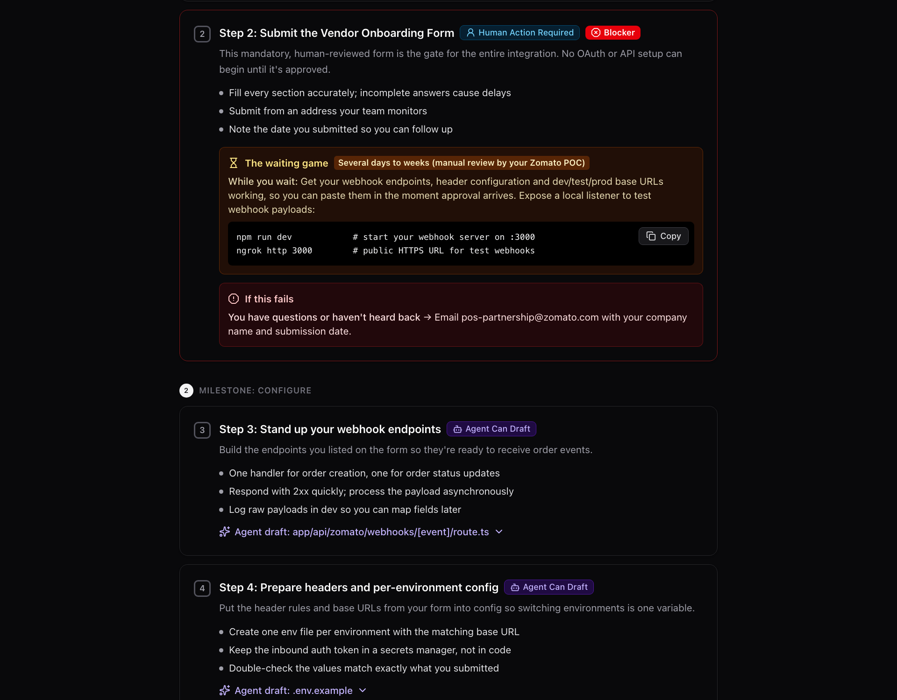
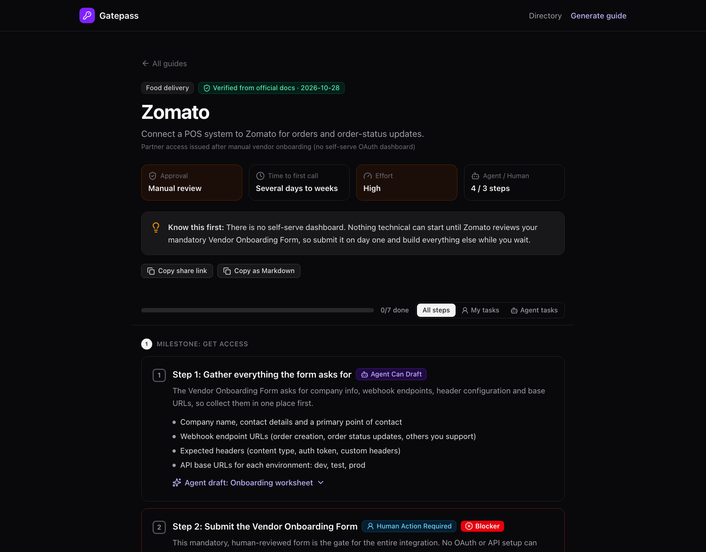
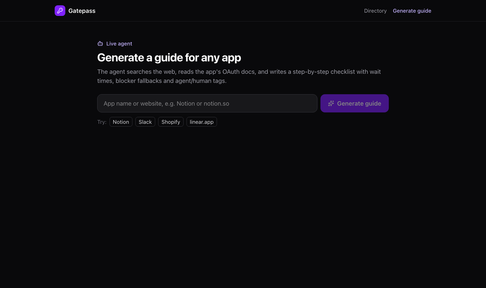

| Role | Product builder: scoping, product design, build and deployment (solo, built with AI coding tools) |
| Brief | Take-home assignment with a 6–8 hour build constraint (October 2026) |
| Users | Developers integrating with third-party apps (Swiggy, Zomato, Blinkit, Zepto and any other app) |
| Stack | Next.js 16, React 19, Tailwind CSS, Vercel AI SDK 7, Gemini, Zod, Vercel |
| Live link | https://oauth-assignment.vercel.app |
At a glance
Problem
Developers lose hours digging through fragmented docs, guessing approval times and hitting blockers nobody warned them about.
Solution
A searchable directory of step-by-step checklists, plus a live agent that researches any unfamiliar app and writes a guide in the same format.
Outcome
Shipped and live in one build window: 4 verified guides, a working AI generator, shareable links and a public deployment.

1. The Brief
The assignment asked for a focused, working slice of a tool that helps developers set up and get approval for OAuth integrations. Today they waste hours in fragmented docs, guess how long approvals take, and run into blockers. The tool had to give them clear, actionable, shareable guides: what to expect, how long it takes, and what an AI agent can do for them versus what they must do by hand.
The constraint: a 6–8 hour build. Functional, clean and clearly demonstrating the core value, not production-perfect. Prioritise a smooth, readable demo over edge-case handling.
In scope
- A clean, searchable UI: a directory where a developer searches for an app and opens its OAuth setup guide.
- Pre-populated guides for 4 apps: Swiggy, Zomato, Blinkit and Zepto, hardcoded from the provided ground truth. No hallucinating.
- Live agent generation: type an unfamiliar app name or website, and an AI agent searches the web, analyses the OAuth docs and generates a shareable guide in the same format.
- A human-readable step-by-step guide: a chronological checklist in plain English, with milestones and checkboxes ("Step 1: Register App", "Step 2: Configure Redirect URI").
- Explicit wait times and blockers: every manual approval states the expected wait and a productive "while you wait" task; every known failure point gets an "If this fails, do this" fallback.
- Agent vs human breakdown: every step tagged [Agent Can Draft] or [Human Action Required].
Out of scope
- Building all 100 guides by hand (just the 4 plus the generator).
- Real OAuth flows or real provider approvals (the success state is mocked).
- Login or signup for the web app.
- Paid APIs or anything requiring a credit card (free tiers, or mock the search step).
- Complex state management or a database (a local JSON file is enough).
2. The Ground Truth: 4 Apps
The 4 curated guides were written only from the facts provided in the brief, cross-checked against each provider's official docs.
| App | Setup | Approval and time | Blocker fallback | Gotcha |
|---|---|---|---|---|
| Swiggy | Dynamic Client Registration (RFC 7591); MCP clients like Claude Desktop and Cursor register themselves | Near-instant; a new redirect URI or custom scheme needs an email to builders@swiggy.in | If a custom scheme is rejected: no wildcards, strictly HTTPS (or http://localhost for dev) | The consent UI's OTP endpoints (/auth/send-otp) are internal and can't be called by third parties |
| Zomato | No self-serve OAuth dashboard; starts with a mandatory Vendor Onboarding Form | Manual review: several days to weeks | While waiting, prepare webhook endpoints, header configs and dev/test/prod base URLs | A human gate before any technical work, flagged as [Human Action Required] blocker |
| Blinkit (Blink) | Standard OAuth 2.0, but registration is gated | Contact the dev team on their Mattermost server (chat.blink.sv) | No reply in 48 hours: check the request had app purpose, scopes (read, receive, write) and exact callback URL | A refresh token needs the offline scope requested explicitly |
| Zepto | Standard authorization code + refresh token flow via a developer dashboard | Self-serve client_id and client_secret, near-instant | 403 after updating scopes: stop re-authenticating and open a support ticket (known platform issue) | Access tokens expire in 2 hours; refresh tokens are single-use and rotate every time |
3. The User and the Core Insight
The user is a developer who has just been asked to "integrate with X". They don't need another wall of docs. They need answers to four questions before they lose a week:
- What do I do first? (the order of operations)
- Who has to do it? (me, or can an agent draft it)
- How long will I be stuck? (and what can I do meanwhile)
- What breaks, and what do I do then?
Insight: the expensive part of OAuth is rarely the code. It's the human gates: a form, an email, a chat request, a review. A good guide puts those gates first, says how long they take, and turns the wait into productive time.
4. The Solution: Anatomy of a Step
The core of the product is the checklist step. Every step answers those four questions in a fixed reading order:
- Who does it: a violet Agent Can Draft tag or a blue Human Action Required tag. Hard gates also get a red Blocker badge.
- What exactly: one plain-English sentence plus 2–5 concrete action bullets.
- ⏳ The waiting game: the expected wait (e.g. "Several days to weeks") and one productive while-you-wait task, often with a ready-to-run command such as
ngrok http 3000. - 🚨 If this fails: the exact symptom and the immediate fix.
- Agent draft: a ready-to-paste artifact for agent steps: the email to Swiggy, the Mattermost message for Blink, the token-exchange curl, or Zepto's rotate-and-save refresh code.

Around the steps, each guide page has:
- A summary header: approval type, time to first API call, effort, and the agent-vs-human step count.
- "Know this first": the single most important fact in two sentences (e.g. "Nothing technical can start until Zomato reviews your form").
- Milestones: Get access → Configure → Implement → Verify and go live.
- Progress tracking: checkboxes saved in the browser, so a developer can come back across days of waiting.
- A "My tasks / Agent tasks" filter: see only what you personally have to do.
- Gotchas and sources: the hard-won lessons, with links to the official docs.
- A mocked success state: finishing every step shows "integration ready (simulated)", as the brief asked.

5. The Live Agent
For any app outside the 4, a developer types a name or website and the agent writes a guide in the same format, streaming what it's doing ("Reading Shopify's developer docs…", "Read 11 sources…", "Extracting wait times and fallbacks…").

How it works
- Research: a web-grounded model reads the official developer docs and writes bullet notes, each with a source URL, and writes "NOT FOUND" for anything it can't verify.
- Compose: a second call turns the notes into a guide that is validated against the exact same schema as the 4 curated guides, so generated and hand-written guides render identically.
The composer's system prompt enforces the brief: chronological steps, a tag on every step, a wait time and while-you-wait task on every approval step, a fallback for every known failure, and no invented endpoints, emails or durations. Generated guides carry an "AI-generated" badge, a confidence level and their sources.
Example results from the live agent
| App | Time | Result |
|---|---|---|
| Notion | 88 seconds | Read Notion's official docs; high confidence; self-serve, ~1 hour, 5 steps with fallbacks |
| Shopify | 66 seconds | Read 11 sources; high confidence; flagged "5–10 business days for public App Store listing" with a wait step |
| Slack | 15 seconds | Built by the backup model; exposed a gap (review step missing), which I fixed in the prompt |
6. Key Product Decisions
| Decision | Why |
|---|---|
| One format for every guide | Curated and AI guides share one schema, so the UI can't drift and a bad edit fails the build instead of showing wrong info |
| Human gates first | The longest waits (Zomato's form, Blink's Mattermost request) are the critical path, so they are step 1–2 with a Blocker badge |
| Every wait has a "while you wait" | Turns dead time into progress: build the webhook listener or callback handler before credentials arrive |
| Share links without a database | A generated guide is compressed into the link itself, so it can be shared forever with nothing stored |
| Curated beats generated | Typing "Zepto" into the generator opens the verified guide instead of spending an AI call |
| Honest confidence | AI guides show a badge, confidence and sources; if no AI is available, a clearly labelled demo template is shown instead of fake facts |
| Stayed in scope | No login, no real OAuth, no database, exactly as the brief asked |
7. Building Under Real Constraints
The hardest part wasn't the UI. It was making a free-tier AI agent dependable enough to demo.
- Free web search was blocked: DuckDuckGo refused automated searches and Bing returned irrelevant results, so I switched to search built into the AI providers.
- OpenAI key had no credits: instead of a broken demo, I built a fallback chain: OpenAI → Gemini → Groq → a labelled demo mode. The generator never dead-ends.
- Gemini's free tier changed the rules: new keys can't use older models and get zero Google Search quota. I moved to Google's newer Interactions API and had the agent read official docs pages directly.
- Overloaded models: when the main model times out, a lighter model takes over and reuses the research already done, within a time budget that stays inside Vercel's limits.
- Quality check: testing Slack showed a review step was missing, so I tightened the prompt: every review or approval must be its own step with a wait.
8. Outcome
4
verified guides from ground truth
1
live AI agent for any other app
100%
of steps tagged agent or human
Live
deployed on Vercel
- Every brief requirement shipped: searchable directory, 4 ground-truth guides, live generation, checklist steps, wait times with while-you-wait tasks, blocker fallbacks and agent/human tags.
- Shareable via link and "Copy as Markdown" for pasting into tickets or Slack.
- Works on mobile and in light and dark mode.
- Try it: oauth-assignment.vercel.app
9. Limitations and Next Steps
- Free-tier AI is slow and sometimes overloaded: a generated guide takes 1–2 minutes, and at peak times the agent falls back to the demo template. A paid key or a cache of popular apps would fix this.
- Generated guides depend on public docs: many providers don't publish approval times, so the guide says "not published" rather than guessing.
- Progress is per browser: no cross-device sync, by design (no login).
- Next: save generated guides to the directory after review, let developers report real wait times, and refresh curated guides on a schedule.
What I Learned
- Scope is a feature. Saying no to login, real OAuth and a database is what made a working, deployed product possible in one build window.
- Design for the failure path. The "if this fails" and "while you wait" blocks are the product's real value, and the agent needed the same thinking: every provider failure has a fallback.
- AI output needs guardrails. One shared schema, source citations and an honest confidence label make AI-generated content trustworthy enough to share.